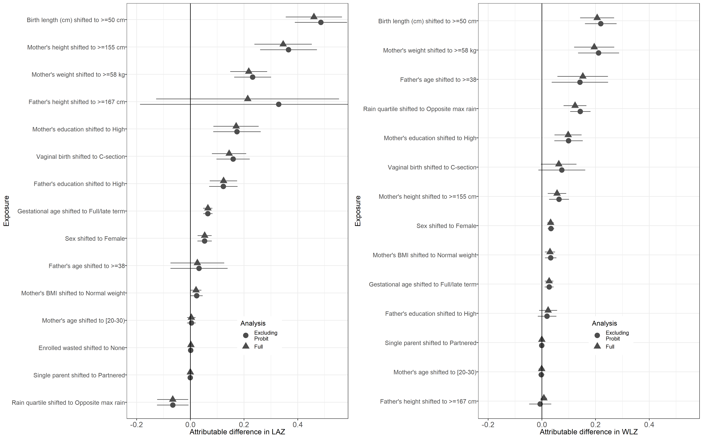

Chapter 12 Sensitivity to dropping PROBIT trial
12.1 Overview
Purpose: The PROBIT trial, conducted in Belarus, was the only study included conducted in Europe, as opposed to Latin America, South Asia, or sub-Saharan Africa. It was also one of the largest studies, so may have an influential effect on the pooled estimates. Because of differences in income, environmental conditions, and population anthropometry, we reconducted the primary analyses without the PROBIT trial and present the results here. Interpretation: Exclusion of the PROBIT trail did not affect the main inferences presented in the manuscript. Implications: It was appropriate to include the PROBIT trial in the pooled results presented as the primary results of the manuscript.
12.2 Comparison of attributable differences estimated with and without the PROBIT trial
Because PROBIT was the only European study, we also conducted a sensitivity analysis as to the effect of removing PROBIT on attributable differences at 24 months (within the exposures measures during the PROBIT trial). Other than for the estimated associations between father’s height and child Z-scores at 24 months (which was measured in few other studies), PROBIT is not highly influential.
